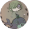

 To Cara
Hi 冠英，
这是我第一次给你写信，虽然我们平时可以随意畅谈，但是通过这种方式来表达所感所想还是让我有点生疏，毕竟从高中之后就没有提笔写过这么长的内容了。回顾一下我们相识相知一路走来的日子，权当做回忆和记录了。
我们初次相识还是受室友的牵线搭桥，还记得那天晚上下班坐在书桌旁刷着手机，室友发来一句微信”你有女朋友吗“，我就大概猜到了后续😄，随后看到了几张你的照片觉得嗯？这妹子真的挺漂亮的哈哈，尤其是那张扎着丸子头的游玩照片，侧脸向着镜头，显得仙气飘飘，于是答应了第一次见面，也开始了我们之间的故事。
还记得第一次见面是我们三人约在了望京的海底捞，非常不好意思的是我第一次就迟到了😊（虽然是由临时的会议导致的）。刚走进餐厅拐角就看到你们背对着坐在那畅谈，于是走过去开心的打了下招呼，毕竟第一次见面还是挺期待的。面对着坐着看清了你的脸，齐肩的短发配上牛仔外套显得干净而干练，脸上透露出平静的微笑，第一印象便是一位安静爱笑的女生，后面整场聚餐都印证了这一点，全程都没怎么说话，只是安静的吃着，听着我和室友在那里聊了无数个话题，只是偶尔你会搭几句，还是在室友的提醒下你做了自我介绍，矜持而害羞，心里觉得这姑娘挺可爱的，有点傻乎乎的哈哈，其实第一次的见面对你的印象很好，无论是外貌还是性格，虽然我们只是简单的了解了下，但是感觉轻松而愉快，只不过在一起之后才发现安静腼腆那是假的哈哈哈，不过我也喜欢。
聚完餐送你到地铁口，寒暄了几句便走回家了，像朋友间的告别，回到家有些许的失落感，可能是对你也有感觉？便约你周末出来玩，那时只想着什么时候可以再次见面而地点却没有好好挑选，也不知当时是怎么想着大夏天约你去奥森散步，这个在后面我们在一起之后也被拿来反复吐槽😒。最终还是你定了说我们去逛逛宜家吧，我当然是同意啦，毕竟对我而言地点并不重要，主要是能快点再一次见到你。
不久便迎来了我们再次见面，这次是我先到，便四处溜达了一下，等了不久你就到了，我们在大厅的休息区见得面，你穿着连衣裙，看起来显得更好看了，我们并排站着上了电梯，一路聊着，这也是我第一次近距离的看着你的脸，一颦一笑显得格外动人。我们在生活区闲逛，这也是我第一次逛宜家，你说要买桌布和餐碟，让我帮着挑选，我也凭着自己的审美给你了建议，你也同意我的选择，这也说明我的审美也没有太直哈哈。静谧的夏日午后时光就在我们的欢声笑语中悠闲而过，我们也一起吃了晚餐，第一次双人晚餐就点了凤爪，可不是我点的哦哈哈，并没有吃的张牙舞爪，相反如此的文静秀气，甚是可爱😊。我们也聊了很多，这次算是我们对彼此有了更深的了解，我们的学生时代、工作的烦心事、旅游中好玩的事，谈天侃地，很是欢乐。欢乐的时光总是短暂的，我们饭后就得告别了，沿着去地铁站的路，我走在花坛边而你走在花坛的石阶上，显得我们是一样的高，你摇摇晃晃的走着，闲聊之中我却时刻关注着你，怕是不小心没站稳摔倒，我也好绅士的扶着你😎。最终我们还是在地铁站告别了，这也是我们第一次单独相处的一天。可能也就是单独的相处的机会让我们跟彼此更近，从那时开始心里便会经常想到你，虽然不知道你心里是否也会经常想到我，开始期待着每次的见面。
回到家回归正常的工作生活，只是相比之前独自一人时的三点一线，心中总会有些期待，会因为你的一句微信消息而开心一整天，也时常盼望着上班路过地铁口时碰到你飞奔着卡点上班的情形，可是挺奇怪的，从来没有在早上上班途中遇到过你。之后一段时间大家也都是忙于工作，没有频繁的联系了。可能心中还是不想让这种关系变得平淡，于是我做好攻略约着你出去爬山，似乎北京周围的朋友也都喜欢爬山，可能也是最容易从现实忙碌的工作中抽离出来，亲近大自然的机会吧。再一次的见面还是之前熟悉的感觉，你穿着一身爬山的运动装，透出一种健康活泼的样子，又是另一种感觉。可是这次约会也不太顺利，虽然提前做好了详细的攻略，刚进门上山就碰到了一番难忘的“景象”，上山的路上、宽敞的平地上都布满了蠕动的大虫子，顿时吓得你花容失色、快要哭了出来，我只能扶着你就地下山，一路的安慰和照料，这可是我之前怎么都没预料到的，至今我们也没有再去过凤凰岭，我的攻略也还是没有用上。可能你也觉得不好意思没能跟我爬山，我们便在入口不远的地方玩起了射箭和下棋，可是爬不爬山对我来说又有什么关系呢，跟你一起游玩就很开心。没多久玩完了一些项目我们便离开了，时间还是半下午还早，我们又决定去爬附近的百望山，看起来不是很高也不会太累，一路说说笑笑便开始登山了，这次顺利多了，一路也是绿意盎然让人心情愉悦。登到半山腰竟看到了一处喂养鸽子的地方，我们停下来找食材喂养那些鸽子们，手里拿着食材一撒便一堆鸽子围过来，一只只都长得肥肥的，估计不用关起来也飞不走，吸引着游玩路过的小朋友们，也算是登山途中的意外之喜吧。继续向前走着来到一处高台，我们翻了上去坐在高台的边缘，任双脚随意摇摆着，看着映入眼帘的大片绿色，吹来阵阵凉风，炎炎夏日最舒服的莫过于此了。我们畅谈着无数话题，伴着凉风，心里想着时间能过的慢点就好了。太阳也快下山了，终究还是要告别，还是如同往日我们一起吃完晚饭，送你到地铁口，我们又分别了。
接下来的日子似乎更加难熬，每次无论是工作还是生活中闲下来发呆的时候脑海中总会想起你的身影、你的笑容。后面我们也会时常约饭，每次下班都一路飞奔把周边的餐厅都吃了个遍，有时会在食堂看到好吃的便约你出来带给你尝，有时你下班晚想找人一起吃饭我也会毫不犹豫的赶过去。在我心中早已超出普通朋友间的亲密感，不知你是否也有这种感觉。很多次跟你一起吃完饭走向地铁站的路上，我们一路有说有笑，我脑海里会经常闪出一个念头：牵起你的手看着你的眼睛，勇敢的跟你告白。可惜这一切自始至终都只是存在我的想象当中，并没有行动。可能是不确定你心中的想法，如此一来就显得十分唐突，如果吓到了你我们会不会就此渐行渐远，也可能是我没有勇气迈出那一步，理科生的理性和冷静或许有时候不是一件好事，有时会需要一些冲动和感性。
再之后我们见面变少了，各种各样的原因，有时候周末约你而你已经提前有约，也有时会因为突然的事情放我鸽子，手里提前买好的艺术展门票最终还是没有用出去。几次下来让我开始怀疑我们的关系，有可能始终只是自己的一厢情愿，不过是普通朋友间的友情。可能跟你的习惯有关，微信上的聊天有时会突然开始戛然而止，有时候一个话题断断续续隔了好久才回，有时候直接杳无音信，让我的内心倍感煎熬，一开始的热情似乎被慢慢的浇灭了。于是又回到了自己往日的三点一线的生活当中，没有再主动去找过你。
但是忘掉你却没有那么容易，有时工作时抬头看到你上班的大楼会想你在干嘛呢，是埋头忙于自己的工作还是看着窗外发呆呢，拿起手机想着发微信问一问，又想着还是算了吧，如果只是平淡的找话题又有什么意义呢。就这样经历了一段时间的内耗，中间也会有偶尔的联系，不过也慢慢没有了当初每次等你的微信时候的期待，有时会想想自己好像是一个挺无聊的人，每天就是工作、吃饭、睡觉，周末也是瘫在狭小的出租房里，玩着手机电脑，到了周一又开始了循环，日复一日，想着你的生活应该会比我丰富许多吧。慢慢尝试着改变这种堕落感，可能对于外人来说很难发现，但是自己也意识到一直这样并不是什么好事，我也开始在周末经常和老同学以及关系要好的同事约着出去吃吃饭、聊聊天，逛逛北京城的名胜景点、大街小巷，慢慢地发现生活除了工作还是有很多美好的事情，有时只不过是给自己无形中套上了桎梏，想想如果一辈子都重复着每天规律的生活该是一件多么无聊的事情啊。我也开始慢慢在独处的时候尝试更多的事情，去阅读、看纪录片、学着做饭，其中做饭似乎让我打开了新世界的大门，我发现我似乎有着做饭的天赋😄，也竟能从中找到乐趣。于是每到周五下班，便会在回家的路上经过超市去精心挑选食材，脑海中又浮现着前几日从手机上学到的新的菜式和烹饪技巧，到了周六一觉睡醒洗漱完便开始在厨房里捣鼓着，不过幸好合租的室友们都没有做饭的习惯，我可以自由的霸占一上午，一个人的时候也经常会做个三菜一汤，好不丰盛。而自己也从之前一个煮饭加多少米放多少水的厨艺小白到现在能试着做出一桌菜，可谓是自己进步最大的一个领域。当然我想也是我们后面在一起后我在你心中加分的一点吧。原谅说说到做饭就写的有点多了，如果不是篇幅有限，我都能把做饭过程都能一五一十的描述出来，我也相信做饭这件事情上我能坚持下去。
后面由于公司团建，我也出了趟远门来放空自己，几天的海岛行程让身心得到了彻底的放松，不过我们也一段时间都没联系了。回来后便开始了忙碌的工作，由于公司项目的安排我也开始了北京杭州长达几个月的往返出差，每天都工作到很晚，回到酒店刷手机到半夜，醒来又投入到工作当中，长期住着酒店确实会让人压抑，在杭州这座城市也难感觉到归属感，不过好在周围有些关系不错的同事经常能周末出来约饭，聊着各种公司八卦。不过我们也算是彻底断了联系，距我们上一次联系都过去了半年时间了，可能我们再也不会联系和见面了。
但是缘分这种事情谁又说的准呢，还记得那天晚上回到酒店还在处理工作的事情，你突然发来消息咨询我一些技术的事情，而我也刚好对这一块挺熟悉的就给你讲解了起来，久违的联系也让我有一丝惊喜，由于这些问题打字说起来很慢，我也直接拨通了你的电话，还是那熟悉的声音，我们聊完问题便又聊起了其他，你从我给你的截图中看出了我在杭州，不得不说眼神可真好，你说你也在杭州，想来可是真的很巧，我们寒暄了一会儿便挂断了电话，而这次我也没有多想什么，也只是朋友间的帮忙而已。
然而过了几天，你突然微信找我问我什么时候回北京，周末如果有时间可以一起出去玩，想着周末也没有安排，在杭州四处玩玩也不错便欣然同意了。等到周六我们约的是下午去看舞台剧，那天刚好是七夕，虽说七夕男女生间的约会会显得关系很微妙，但是我也确实没有多想什么，毕竟对于单身的人来说和其他日子并没有什么不同。那天大街上人来人往，比往常拥挤了不少，毕竟是节日嘛，在车上堵的不行眼看着舞台剧就要开始了我就提前下来一路小跑过去，而你已经提前到了，刚见面打了个招呼还是如同以前熟悉的感觉，一切都没有变。那天的舞台剧氛围真的很好，由于是喜剧，时不时惹得台下观众哈哈大笑，轻松而愉悦。看完了满意的演出也到了晚饭时间，我们就在周围找了个餐厅吃了点东西，聊起了这段时间各自的生活，我也才知道你选择从北京转到杭州来工作，其实我从毕业开始就计划好了最终会去杭州，等我在北京干完两年有机会转岗了就去，没想到你却先来一步。还记得在北京的时候跟你聊天你说你以后想去上海，当时心里还咯噔了一下，想着你如果到时真去了那我们恐怕很难再见面了。可当你说你来杭州了，着实是让我又惊又喜。由于旁边就是西湖，我们吃完饭便想着沿着这里散散步，虽说已经是炎炎夏日，傍晚西湖的风吹着让人凉爽不少，一路人潮涌动，而我们还沉浸在聊天的话题当中。不知不觉已经快到深夜了，我们竟走完了大半个西湖，想着再往前走到路口我们也该到点回家了。刚聊完上一个话题，突然你说你有个问题想问我，我第一时间想的竟是你又碰到啥技术问题了，我也好露一手哈哈😄，但你却问的是我觉得你怎么样，这一下把我弄得手足无措，毫无准备，支支吾吾的说这些车轱辘话，才反应过来原来这不是个单纯的七夕，你是有备而来的😏。我们坐在湖边的长椅上，听着湖水拍打着岸边的声音，我也说出了一直憋在心里的话语，你说知道我一直计划来杭州所以也选择了杭州，不知道是不是真的，但是我信了，我牵起你的手说我们在一起吧，那晚的你在月光下显得格外的腼腆和娇羞，就这样我们在一起了。我们牵着手走完了西湖剩下的路程，没说什么话，但能感受到彼此的喜悦。分开后在回家的车上，想着今晚发生的事情还是觉得很奇妙，有时候缘分真是妙不可言，我们恋爱啦！
分开之后满脑子都是你，竟然让我失眠了。第二天上班也没法平静，我们工作的地方离得很远，你说来接我下班，我当然是很高兴的，谁不想一下班就能看到女朋友在公司楼下等你呢。整个白天都在想着当见到你时应该怎么给你一个惊喜呢，当然是送花啦，于是下午趁着摸鱼时间找到楼下附近的一个花店挑好了喜欢的搭配，还嘱咐花店的小姐姐别忘了贺卡留言，提前都安排好就等着下班见你了。上班的时间确实难熬，焦急地等待你下班还要坐一个小时的车过来，不过满是期待。好不容易等到你来了，我提前订好了吃饭的地方，我们边吃边聊就这样吃了一个多小时，吃完我提议去附近的公园逛逛，其实是为了能路过那家花店，我们牵着手慢悠悠的转着，晚饭后闲暇的时光想想就很美好。慢慢地我们路过了花店，让你等我一会儿，便跑到花店去取订好的花，看到成品感觉挺好的跟我想象的样子差不多，我捧着花出来走向你竟然有点不好意思了，你接过花说着很喜欢露出惊喜的表情，顿时觉得自己挑对了，我觉得我审美一直都还挺在线的哈哈😄，你穿着连衣裙捧着花显得格外的美丽，我们一路轻松地说着笑着，天慢慢下起了小雨，时间也不早了，你又得一个小时的车程赶回家，尽管满是不舍，可是又有什么办法呢，雨越下越大，你要上车了，我们临别前抱了下，可是看着你我情不自禁的吻了下你的额头，你害羞的低着头，我们告别了。你回去后发了张捧着花的照片，真的很美，从此之后成了我跟你的聊天背景了，毕竟这样我就能天天看到了。
开始觉得每天时间过的实在是太漫长了，每天都期待着周末都能快快到来。我们相距甚远，但是这也抵挡不住我想过去见你的热情。一到周末我们便相约去外面游玩，不过现在和在北京时候可不一样，现在可是男女朋友的身份呢，可以光明正大的牵手拥抱。平日常常宅在家里的我现在每周最期待的是提前搜索周边好玩的好吃的地方，等待着周末和你一起去体验。记得有句话说的当你日常看到好吃的好玩的第一时间会想到对方，那一定是真爱吧。
我们来来回回的逛过多次西湖，竟也没有腻，每次都是晚上乘着晚风，牵手走过断桥、白堤。。。太多值得留恋的美景，当然每次感触都不一样，但是都是充满着开心和喜悦。我们每周都去遍各种地方，有西湖、湿地这种自然美景，也有私影、游戏室这种娱乐地方，每个地方都有着各自的记忆。
很喜欢跟你慢慢逛着良渚遗址公园，一望无际的自然景色，辽阔而又静谧，我骑着景区电动车载着你，花一整个下午的时间游遍这里，不同的季节还有着不同的景色，可以看看小鹿，可以划划溪水，停停走走很是惬意，工作的压力和生活的烦恼早就被抛之脑后，是让我记忆犹新的地方。
我们还去了游乐园，我俩胆小的不敢踏进鬼屋，高空的项目也让我们望而却步😄，不过碰碰车倒是挺适合我们，我们在里面各种追逐碰撞、嬉笑尖叫，玩一次还不够尽兴，又跑去排着长长的队伍。我们还坐上了你喜欢的旋转木马和摩天轮，在摩天轮缓缓上升中我还有点害怕，手里紧紧抓着旁边的护栏，而你则显得很兴奋拉着我拍照，当升到最高点时我们还亲亲了，记录下这美好的时刻，远处还能看到金色的夕阳西下。
慢慢地我们越来越熟悉，也越来越亲密，决定带回家见彼此的父母，是让人很开心又很紧张的事情。还记得离见面时间还有一个月就开始紧张起来，每天都在想着见面要说的话，该准备哪些礼物，要注意哪些事情，紧张而又期待着。直到走进你家的那一刻才放松下来，叔叔阿姨和弟弟妹妹们都很热情，做好了满桌丰盛的饭菜，聊起天来气氛轻松融洽，让我没了紧张和拘束，倒是自在了很多。后来每次回家经过武汉时都会去你家吃饭，觉得越来越熟悉和融入了。
后来我们还参加了几次婚礼，你去当过伴娘而我也当过伴郎，真正的感受到了婚礼的氛围，感觉连流程都记得很熟了😄，虽然忙碌劳累，但是能感觉到新郎新娘和周围的朋友都是充满笑容的，这也是人生中很重要的时刻吧，新郎牵起新娘的手伴着全场宾客的祝福，说着会被永远铭记的话。我们也在婚礼上认识了很多彼此的同学和朋友，互相介绍着打招呼。婚礼上的场景也时常出现在我的脑海当中，希望到时的主角会是我俩。
时间过的飞快，后来你说你要被公司派去印尼出差，热恋中的我们突然要异国了，让我很不适应，而且还是三个月，漫长的日子真实让人难熬，尤其还是在疫情期间，我也没法飞过去见你。送你去机场的那天让人难受和不舍，难受的是我们几个月都没法见面，只能靠着视频缓解思恋，也担心你一个人在异国生活的适不适应。开始的日子总是难熬，你开始适应当地的生活和饮食，我也在适应没有你的日子，我们每晚通过视频联系，聊着最近发生的事情，有时也会让自己忙起来，这样能缓解一些不好的心情。你会分享当地的美食和异国的景色，也跟同事相处的很好，还能约着逛街游玩，去到周边的国家，而我周末就很少出门了，平日里做饭也少了，回到了之前一个人的生活，真的挺无聊的，还是有女朋友陪伴的日子才充实和精彩。经过三个月漫长的时光，终于等到你回来了，欣喜又期待，再次见面时我们紧紧拥抱着，真的有说不尽的想念。
我们又回到了之前的生活，每天腻歪在一起，我们对各自的性格和习惯已经足够熟悉，经常一个动作、一个眼神就能知道对方想做什么，有时都觉得很神奇，这就是我俩之间的默契吧。我们慢慢地玩遍了杭州，开始去更远的地方，去爬了风景秀美、雄险奇峻的黄山，还记得爬完之后累得你晚上回来发起了高烧，我还半夜跑去四处找退烧药照顾你，还好的是很快就缓解了。我们还去了满是江南烟雨、小桥流水的乌镇，真的是很美的地方，傍晚和清晨沿着石板路缓缓地走着，周围的一切显得宁静又有诗意，能看到江南美景也能尝到江南小吃。我们也去了课本中的绍兴，真是一个人杰地灵的地方，看到了课本中的三味书屋、百草园，还恰巧听到了一位热情的导游跟一群学生边游玩边讲解，我们都听的入迷了，回想起以前听着课文的时候能身临其境该多好。大街小巷都卖着黄酒冰棍和奶茶，味道是真的不错。
我们去到了更远的地方，和朋友一起到了济州岛，吃到了好吃的烤黑猪肉和炸鸡啤酒，也打卡了美丽的海岛景色，我们沿着海岛骑着车环游，吹着海风看着远处的果冻海，踩在海边柔软的沙滩上，一路拍了很多美照来记录这趟旅行，留作以后来慢慢回忆。
后来你又因为工作要被派往新加坡出差，可现在不同了，我没多久办好了签证安排好了去看你的行程，我们可以时常见面了，而我这次去除了看你，还计划了一些秘密的事情来给你惊喜，提前安排了许久但是最终还是因为一些原因没能让你看到，这里就不详细写啦，你想知道的话我可以偷偷告诉你哦。
时间过得可真快，不知不觉我们在一起就快两年了，两年中我们竟也没有因为闹矛盾吵过架，我想跟我们的性格也有关系吧，你一直都是温柔聪明、美丽大方的，心思细腻又能讲道理，你外向而我又内向，你善于跟人打交道而我则喜欢独处，互补的性格让我俩相处起来显得很融洽，希望能一直如此。我有时会因为一些烦心的事显得有点不耐烦，可能有时从语气上表现出来了，而你也总能包容；当你在生气时不爱搭理和沟通时，我也愿意主动去找你聊一聊，我想着多沟通能解决掉大部分的矛盾。你热情又开朗，而我理性又冷酷，但是对你的爱永远是热烈真心的，希望我的行动能让你感受到。我们聊到婚姻的时候我会开玩笑的说你啥时候给我个名分啊，你说我得通过你的考察，不知到现在有没有达到你的要求。
好啦，我们的故事就写到这啦，我脑海中已经想象到了你看到这封信时候的样子，期待着你说出我愿意这几个字，我们的故事还会继续写下去。
爱你的小杜❤️